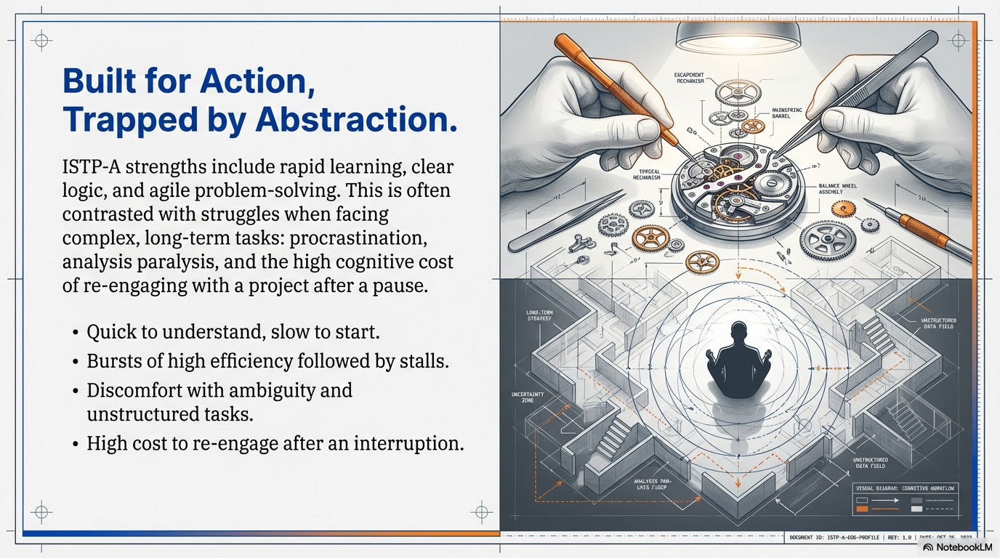
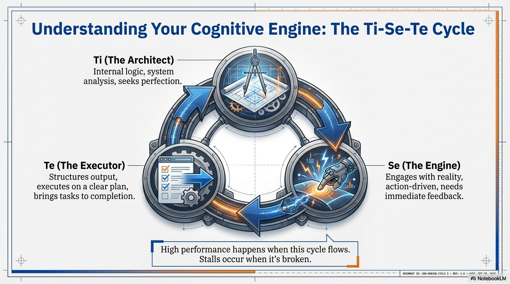
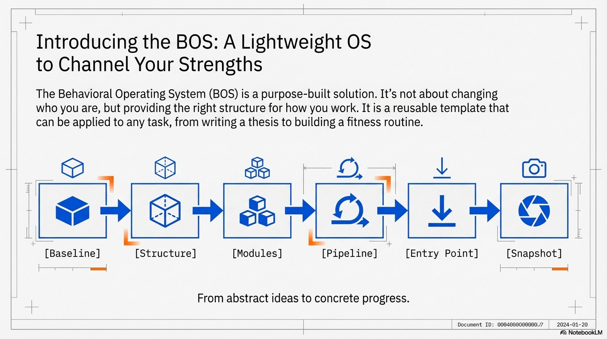
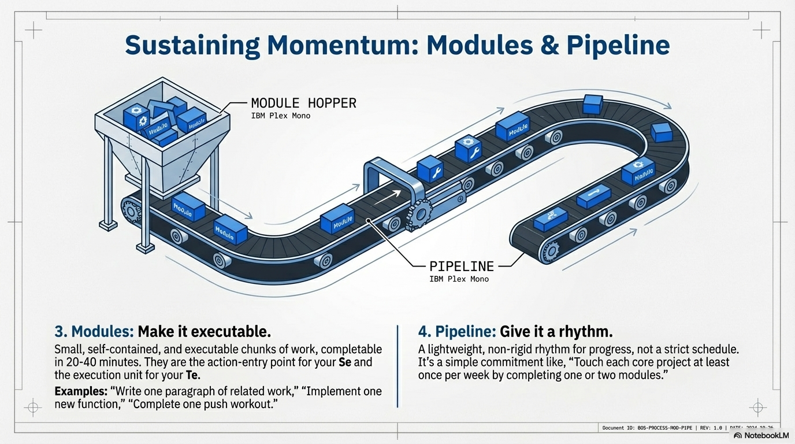
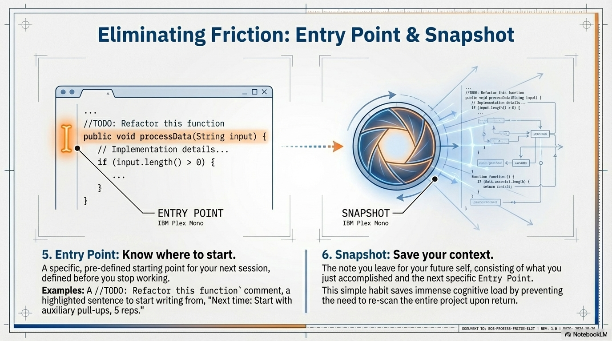
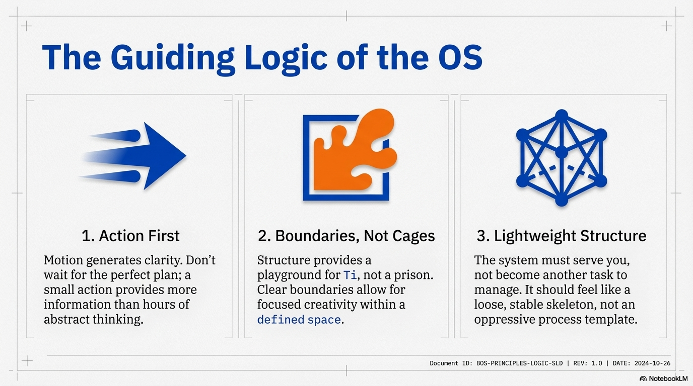
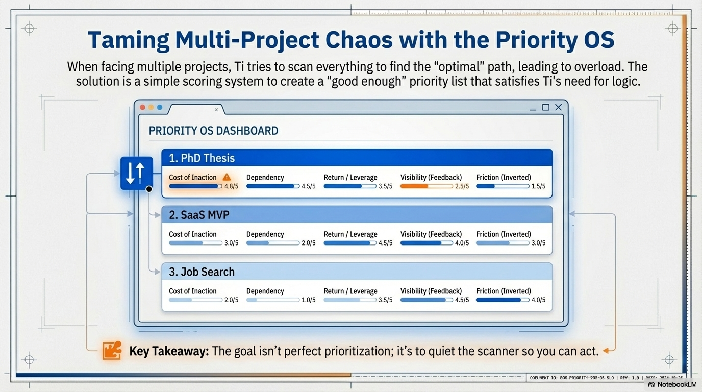
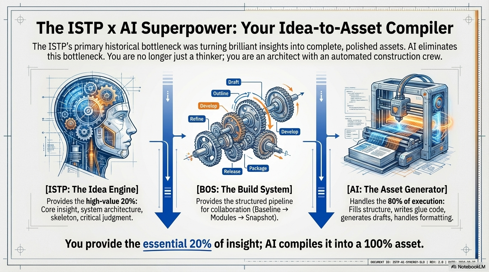
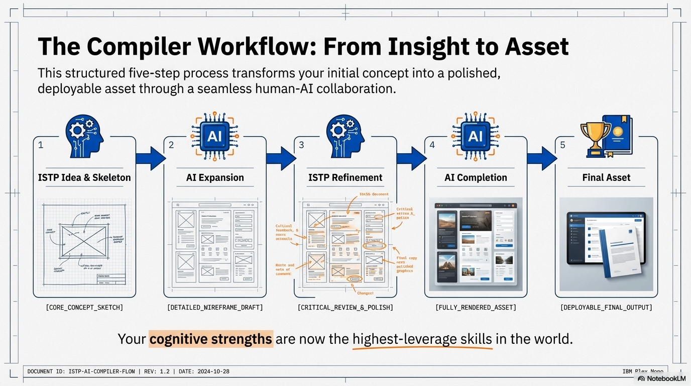

ISTP-A 行为操作系统
目录
- 引言：为什么 ISTP-A 需要一套行为操作系统
- 核心认知模型：Ti、Se、Te 的对立统一与协同
- 行为操作系统的总体框架：从 Baseline 到 Snapshot
- 系统的核心原则：行动优先、边界明确、结构轻量
- 方法论论证与结语：ISTP-A 的长期复利路径
- 多任务并行管理（Priority OS 作为指导原则）
- ISTP × AI：Idea-to-Asset Compiler（想法到资产的编译器模型）
- Podcasts：音频资源
- 附录：应用案例集
1. 引言：为什么 ISTP-A 需要一套行为操作系统
ISTP-A 的优势往往在于行动迅速、反应敏捷、逻辑清晰、学习速度快，也擅长解决具体问题。你通常能够在实际情境中快速理解系统的运行方式，并通过动手尝试找到高效的解决方案。然而，ISTP-A 天生不擅长长期规划，不喜欢被时间表束缚，容易因为 Ti 过度分析而迟迟无法开始一个项目，也容易因为 Se 追求短期体验而在中途中断长期任务。
更重要的是，ISTP-A 的 Te 虽然具备很强的执行爆发力，但这种爆发往往是阶段性的、情境驱动的，需要明确、具体的入口才能被激活。当任务模糊、过于抽象或缺乏即时反馈时，Ti 会接管，并尝试在脑内"推演出最佳路线"，结果反而把行动推迟了。
ISTP-A 面对复杂、长期任务时的典型模式：
- 起初理解很快，但迟迟不开始
- 一旦开始，可以高效爆发一段时间
- 遇到不确定或结构模糊的部分，就会卡住
- 中断后再想继续，成本很高，甚至干脆不再碰
- 同时进行多个项目时，Ti 反复扫描全局，越想越乱
这些现象并非能力不足，而是你原本的认知优势与外在任务形态之间存在结构不匹配。绝大多数任务管理、时间管理、生产力系统，都是围绕高度外向、长期规划型人格设计的，并没有考虑 ISTP 的认知风格。
行为操作系统的核心理念
本手册提出的"ISTP-A 行为操作系统（Behavioral Operating System）"，就是为了把你的天赋使用方式重新整理成一套结构化、可复用、可迁移的模板。它不强迫你变成另一个类型，而是让你在保持自由度的前提下，获得更稳定、更可预测的长期输出。
2. 核心认知模型：Ti、Se、Te 的对立统一与协同
ISTP-A 的认知核心是 Ti（内向思考），辅以 Se（外向感知），并在成熟之后发展出较为可用的 Te（外向思考）。这三者之间不是平行工作，而是一种动态循环。
Ti - 内向思考
Ti 倾向于向内在逻辑世界深潜。它喜欢拆解系统结构、寻找最优解、保证内部一致性。Ti 让你能够在较短时间内理解一个系统的核心原理，并发现许多别人注意不到的结构问题。但 Ti 的弱点在于，它在面对不完整信息或庞大结构时，容易陷入无休止的推演和追求完美。当 Ti 一直试图"想清楚一切再行动"时，行动就被拖延了。
Se - 外向感知
Se 则是 ISTP 行动力的直接引擎。Se 关注当下的现实与感官体验。通过看、摸、试、做，你会迅速进入状态。你往往不是通过"想明白之后再做"，而是在"先做一点看看会发生什么"的过程中理解事物。当任务可以具体被操作、可以在短时间内看到反馈时，Se 会极大提升你的能量与专注度。
Te - 外向思考
Te 是负责外向执行和结构化输出的功能。当一个任务已经有了足够清晰的结构、有明确的入口、有可以观察的输出指标时，Te 会非常高效地把事情一步步做完。但在 ISTP 的功能序列里，Te 并不是自动常驻的，它需要被合适地"唤醒"。如果任务停留在抽象层面，或者结构尚未成型，Te 往往不会自动启动。
高效工作模式：Ti-Se-Te 循环
ISTP-A 的高效工作模式，是 Ti、Se、Te 的循环：Ti 提供结构感和关键点判断，Se 通过具体行动和即时反馈驱动投入感，Te 负责把模块化的任务推进到完成，形成可见成果。
如果任务设计破坏了这一循环，例如要求你长期停留在纯抽象规划，或者要求你在没有清晰结构的前提下硬执行，那么你很可能会在拖延与爆发之间来回反复。
3. 行为操作系统的总体框架：从 Baseline 到 Snapshot
ISTP-A 行为操作系统（BOS）用一个统一框架来处理各种任务，无论是写论文、做实验框架、求职、健身、写 thesis、准备移民材料，还是并行处理多项目。这个框架由几个固定环节组成：
BOS 核心框架
Baseline - 让任务跑起来
Baseline 是一切的起点。它的含义是"让任务以最低标准跑起来"，而不是"把任务一次性做好"。
- 论文：一个能编译的骨架 PDF
- Codebase：能在命令行跑通 toy example 的最小项目
- EB1A/O1：有结构的大纲和初步文书占位
- 健身：可以随时做的五分钟动作
Baseline 的存在，使任务从抽象变成具体，从"想做"变成"已经开始了"。
Structure - 建立骨架
Structure 是建立任务骨架的阶段。它不追求精美的架构设计，而是为任务建立清晰的边界与分区。可以是章节目录、文件结构、模块树、配置文件分布或职责划分。只要你知道"这一块内容放在哪个文件、哪一节或哪一个模块里"，Ti 就会获得安全感，不再需要不断推翻整体。
Modules - 可执行的小块
Modules 是操作层的主角。所有任务都需要被拆解成可独立完成的小块。每个模块应当小到可以在二十到四十分钟内推进一次，大到足以构成实际前进。例如"写一段 related work"、"添加一个新模型实现"、"跑一组 baseline 实验"、"写一封推荐信用的一个段落"、"完成一次 push 训练"。模块是 Se 的行动入口，也是 Te 的执行单位。
Pipeline - 稳定节奏
Pipeline 则定义了你如何以稳定节奏推进这些模块。与复杂的时间管理系统不同，ISTP 的 Pipeline 极为轻量：每周为最重要的项目推进若干模块，每天执行一个或两个小模块即可。你不需要每天处理所有项目，只需要每周保证每个核心项目至少被推进一次。
Entry Point - 切入位置
Entry Point 是每次重新开始一个任务时的"切入位置"。它通常是：下一次从哪行代码改起，从哪段文字写起，从哪张图开始画。Entry Point 越具体，越能降低启动阻力。
Snapshot - 上下文快照
Snapshot 是你在结束工作时留下的"上下文快照"。它由两部分组成：今天做到哪里了，以及下一次具体从哪一步开始。Snapshot 的存在，避免你在每次回到任务时重新扫描全局，从而节省大量的认知开销。
可复用的闭环
这六个环节构成一个可以反复使用的闭环。任何任务，都可以从 Baseline 启动，经 Structure 明确边界，在 Modules 中被拆解，在 Pipeline 中节奏化执行，通过 Entry Point 再次启动，并依靠 Snapshot 承接上下文。
4. 系统的核心原则：行动优先、边界明确、结构轻量
这个操作系统建立在三个核心原则之上。
原则一：行动优先
ISTP 的动力来源并不在于制定远期规划，而在于实际开始做点什么。当任务被拆解为清晰的小模块时，你更容易在没有太多心理阻力的情况下启动。
- 与其思考"我接下来三个月的训练计划是什么"，不如直接做十个俯卧撑
- 与其思考"论文最终要写成什么状态"，不如先写一个小节的草稿
原则二：边界明确
Ti 需要知道"这一块到底属于哪里"。否则，它就会在全局结构中反复扫视，试图重新定义边界。通过建立章节与模块的结构，你为 Ti 提供了一个容器，使其可以在有限空间内优化，而不是在无限可能中漂浮。边界明确并不意味着僵化，而是为创造性行动划定舞台。
原则三：结构轻量
ISTP 非常敏锐，一旦感到结构过重、系统难以维护，就会产生强烈的反感与回避。一个好的行为操作系统应该提供足够的结构感，但不会变成额外负担。你可以把它想象成"一个松散但稳定的骨架"，而不是一个压制性的流程模板。
核心目标
这三条原则共同指向一个目标：让你以最小的心理负担获得最持续的行动输出。
5. 方法论论证与结语：ISTP-A 的长期复利路径
本系统背后的核心逻辑，是严格按照 ISTP 的认知天性构建的。ISTP 的执行力并非取决于外在强迫或宏大目标，而取决于"是否能看到一个立即可行动的入口"。当任务被拆成模块、入口被明确指出、边界被清晰划定之后，Ti 会停止自我阻挡，Se 会被具体行动所吸引，Te 也就有了发挥的空间。
为 Ti 提供稳定边界
Ti 的优势是理解与结构化，但其弱点是在结构不完整时不断重启推演。Baseline 与 Structure 两者共同为 Ti 提供稳定边界，使它可以将精力用于局部优化，而不是无休止地修正整体框架。
为 Se 提供即时反馈
Se 的动力来自即时反馈，而 Modules 与 Pipeline 则持续提供这种反馈。每完成一个模块，你都会在体感上获得"有东西在推进"的确认。
让 Te 面对可执行的小块
Te 在明确的结构与路径下才能爆发。当你知道"今天只需要完成这个小模块"时，Te 乐于上场；而当任务被表述为"完成一篇论文、写完整套文书或整理所有代码"，Te 则很难启动。整个 BOS 的设计，就是为了让 Te 永远面对的是"可执行的小块"，而不是抽象的庞然大物。
长期复利式成长
通过不断循环 Baseline → Structure → Modules → Pipeline → Snapshot，ISTP 可以在不牺牲自由度的前提下，获得长期复利式的成长。你不需要把自己变成某种高度计划性的角色，只需要让每一个任务都符合这套模式。
从更长的时间尺度来看，这不仅仅是一套生产力系统，而是一种适合 ISTP 本性的生活方式和工作哲学。它既尊重你对自由与弹性的需求，又为你的长期目标提供了稳态推进的结构，让天赋真正转化为成果。
6. 多任务并行管理（Priority OS 作为指导原则）
多任务并行是 ISTP 最容易被压垮的情境之一。因为 Ti 会不断扫描所有任务，试图找到"最优推进路径"，结果往往是：想得越多，越不知道从哪里开始。与此同时，Se 无法获得明确的可行动起点，Te 也无从发挥，整体系统进入停滞。
为了解决这一问题，多任务管理在 ISTP-A 的世界里，不应被理解为"同时推进很多任务"，而应被看作"在某个时刻只做一个小模块，但在更长周期内轮流推进多个项目"。这一点需要由一个专门的调度系统来承载，这就是 Priority OS。
Priority OS 五维评分系统
Priority OS 通过五个维度为每个项目评分：
- 不作为的代价（Cost of Inaction） - 如果这个项目再拖延，会不会带来明显损失（deadline、签证、毕业、健康、收入等）
- 系统依赖程度（Dependency） - 这个项目是否是其他任务的前置条件（例如论文的 Baseline 是后续所有实验与写作的基础）
- 回报或杠杆（Return / Leverage） - 完成这个项目是否会为未来解锁更多选项或能力
- 可见反馈（Visibility） - 推进这个项目时，你是否能很快看到成果，从而获得 Se 的动力
- 启动阻力（Friction） - 你现在是否容易开始，还是一想到就感觉头大（反向指标）
通过简单的直觉评分，你可以大致排出项目优先顺序。Priority OS 的目标不是精确计算，而是为 Ti 提供一个足够合理的排序，使它不必一直扫描所有任务。
实践原则
实践上，你只需在每周重点推进优先级最高的一到两个项目，对其余项目进行低频维护即可。
Snapshot 在这里尤为关键。只要你在每个项目中都留下清晰的 Snapshot，说明上次做到哪里、下一次从哪里开始，那么你就可以在项目之间无痛切换，不需要重启全局推演。这样，多项目环境不再是一个巨大的心理负担，而是一个被模块化调度支撑的系统。
7. ISTP × AI：Idea-to-Asset Compiler（想法到资产的编译器模型）
当代的 AI 时代彻底改变了 ISTP 的生产力结构。过去，ISTP 的主要瓶颈在于"想法强，但无法稳定地变成成品"。他们能够迅速洞察系统本质、理解核心结构、提出高质量的思路，但却常常卡在将这些思路转化为可交付成果的最后阶段。论文写作中是"写不完非核心段落"，代码工程中是"骨架清晰但缺乏 glue code"，文书中是"大结构明晰但内容碎片化"，长期项目中是"开头漂亮、中断即死"。
AI 的出现，使这一切发生了根本性的转折。在 BOS 的框架下，AI 不再是一个工具，而是"ISTP 大脑的结构化扩展层"。ISTP 负责提供核心 insight、结构框架与方向判断，而 AI 则成为补全结构、填充内容、生成接口与产出资产的自动化执行器。
核心思想：ISTP 是前端，AI 是后端，BOS 是构建系统
这个模型可以分解为三个角色：
- ISTP：Idea Engine（前端解析器）
负责解析问题、识别本质、提出结构框架、定义实验方向、构建方法 skeleton - AI：Asset Generator（后端生成器）
负责从 skeleton 自动生成可交付的文本、代码、说明文档、可视化、配置与补全性内容 - BOS：Pipeline & Build System（构建系统）
负责定义模块粒度、提供切入点、维护上下文、确保任务可持续推进
三者组合形成一个完整的"想法 → 产品"的编译链路，使 ISTP 的想法不再停留于脑内，而是转化为可交换的资产：论文、网页、视频、SaaS、代码框架、产品原型，甚至硬件实体。
ISTP 负责 20% 的价值密度最高部分
ISTP 的独特优势在于：极快理解系统本质的能力、天然的结构洞察力、对动作路径和实验路线的敏锐直觉、发现不一致与漏洞的能力。这些属于高价值的"20%"。过去，这 20% 无法自动转化为可交付物，因此 ISTP 的产出往往看起来"不完整或不稳定"。
AI 的角色，就是将 ISTP 的 20% 放大成 100% 的产品形态。填表式内容、胶水代码、格式化文书、结构补全、数据处理、文档生成、图表绘制等消耗精力的部分，都可以交给 AI。
AI 补上 ISTP 的最大缺口：结构填充（Structural Completion）
ISTP 最大的动机问题，是对"非本质、无趣、重复"的结构化补全工作缺乏耐性。写论文的 related work、代码的 wrapper、应用的 UI 文案、申请材料的格式化内容，ISTP 明明会，但不愿反复投入注意力。
AI 恰好能够：
- 根据 ISTP 的 skeleton 自动填充结构
- 将大纲扩展为自然语言段落
- 将模块说明变成 Python/TS 的完整代码
- 从 baseline 实验生成论文图表与描述
- 将要点转成 EB1A/O1 的法律结构
这使得 ISTP 可以完全专注在"真正值得 Ti 发力的部分"，不会在无聊任务中消耗执行力。
BOS 是 AI 与 ISTP 的协同协议
BOS 的结构（Baseline → Structure → Modules → Pipeline → Snapshot）非常适合 AI 的协同模式：
- Baseline 为 AI 提供任务目标与最初样本
- Structure 为 AI 提供大框架（章节、模块、目录、API）
- Modules 给 AI 可分配的小粒度单元任务
- Pipeline 定义 ISTP 与 AI 的节奏
- Snapshot 给 AI 提供"继续写"的上下文
AI 在 BOS 中扮演的是一个"永不疲倦的结构补全器"，而 ISTP 不再被结构化任务所困扰。
Idea-to-Asset Compiler：ISTP-A 在 AI 时代的终极工作流
完整编译流程
本质思路
Skeleton
→ Draft
→ Artifact
→ Asset
在这个循环中，ISTP 的认知优势第一次被完全释放，而过去阻碍 ISTP 的薄弱环节全部被自动化处理。
为什么这会让 ISTP 成为 AI 时代最具复利潜力的类型
因为 AI 时代奖励：原理洞察、创意结构、实验与模型框架、精炼的核心想法、模块化的可执行 pipeline——这些都是 ISTP 的天赋领域。
而在过去 ISTP 不擅长的：文书、大量 glue code、graph/table/figure 的生成、长段落展开、可读性包装、对外接口——通通可以交给 AI 做。
在此模式下，ISTP 的产能曲线从"灵光一现的间歇式爆发"变成持续的系统化产出。想法不再消散，半成品不再堆积，产出更加稳定，并能累积成长期资产。
案例：ISTP × AI 论文写作的完整模型
论文写作是一个典型的" 高结构化任务"，过去 ISTP 极易在结构填充、文书展开、大量 glue code、重复性实验等环节失去 momentum。然而 AI 的出现，使得 ISTP 能够专注于最关键、最高价值、最符合自身天赋的部分（idea、本质、实验），并利用 AI 自动补全剩余的大量结构化工作。
总体认识：AI 是结构补全器，ISTP 是本质生成器
- ISTP 的优势：洞察方法本质、构建结构、设计实验路线、debug 实验、理解趋势
- ISTP 的弱点：文书写作、重复性内容、方法展开、related work、长段落表达、全局一致性
- AI 的优势：结构化、填充、展开、排版、统一风格、生成 glue code、生成实验描述
结论：ISTP 负责 20% 的高价值智力工作，AI 负责 80% 的结构化补全工作。
Paper Writing 的六阶段 AI-Hybrid Pipeline
Stage 0：Idea Formulation（ISTP 主导）
目标：生成一个想法、直觉、方法结构
ISTP 做：提出 idea / motivation、定义框图、模块、直觉、写出方法 skeleton
AI 做：帮你 refine idea、检查可行性、判断 novelty potential
Stage 0.5：Time-Scale Estimation（AI × ISTP，极其关键）
目标：在"最便宜的时候"判断这个项目能不能赶得上 deadline
核心变量：一次实验的 run time（cycle time）
ISTP 做：跑一个 mini baseline（比如 2min–5min）、给出模型大小、数据规模信息
AI 做：根据 mini-run 推断 full-run 时间、根据 grid 计算实验总耗时、判断 project 是否在 deadline 内可行、列出 "必须做" vs "可选" 实验
Stage 1：Idea Validation（AI 结构化验证）
目标：最低成本验证 idea 是否 publishable
ISTP：给出问题定义、提出目标、直觉、动机
AI：检索类似工作、判断 novelty space、找出 potential contribution、预估可能的审稿人反对点、提供 alternative formulations、给出最适合的 venue
Stage 2：Skeleton Fill（AI 填充 80% 框架）
目标：在毫无实验的情况下，生成"第一版草稿"
ISTP：写 skeleton、给出方法结构（模块树）、给出 intuition 图草稿
AI：写 related work、从 skeleton 自动写出 method section 初稿、生成 introduction、生成 LaTeX 模板 + 引用结构、为 experiments 生成 placeholder、填充 ablation、analysis 的占位段落
这时你的论文已经可以生成 PDF（虽然不完整）。这会极大提升 ISTP 的 Se 动力，让任务进入流动状态。
Stage 3：Baseline Experiments（ISTP 负责验证核心）
目标：验证 idea 有无 signal；不需要完美
ISTP：实现最小可运行版本的 method、跑 1–2 个 sanity-check baseline、记录小规模实验结果、观察趋势
AI：把 baseline 结果转成文字描述、自动生成图表、caption、自动写 result draft、清理 baseline code（make it reproducible）
Stage 4：Systematic Experiments（ISTP × AI 共同 build codebase）
目标：构建 full experimental framework
ISTP：设计 module-based codebase、撰写核心模型逻辑、定义 registry、config、制作 pipeline 的骨架、列出 grid search 实验矩阵
AI：扩展 code skeleton → 完整 framework、生成 glue code（训练器、评估器等）、生成 config 文件、写 experiment runner、自动生成表格、图表、写 "Experiment Section Draft"
Stage 5：Final Writing（AI 写 80%，ISTP 做 Ti-polish）
AI：统一写 introduction、abstract、conclusion、完整扩展 related work、写 supplementary、写 reference section、做全文 consistency check、给出句法与风格修正、合并所有实验段落
ISTP：通读一遍、修正核心 insight 的逻辑、优化方法图、改进关键论证、删除 AI 生成的冗余、做最终 polish
精确分工总结
| 环节 | ISTP（20%） | AI（80%） |
|---|---|---|
| Idea | 本质、结构、框图 | 灵感 refine、novelty 检查 |
| Time Est. | baseline mini-run | full-run 推断、grid 时间计算 |
| Skeleton Fill | skeleton、直觉图 | 写 method/RW/intro、latex框架 |
| Baseline Exp. | 实验原型、结果验证 | 生成图表、草稿描述、解释 |
| Codebase | 核心逻辑、架构设计 | glue code、configs、runner |
| Systematic Exp. | 决定 grid | 自动跑分析、输出表格 |
| Final Writing | Ti-polish、改逻辑 | 写 80% 内容、格式化、一致性检查 |
最终工作流（可直接照着做）
- 发 idea 给 AI：讨论可行性、novelty、venue
- 跑一个 2–5 分钟的 mini-run → AI 推断总耗时
- 不行就 pivot；行就继续
- 写 skeleton → 让 AI 填满草稿
- 做 baseline
- AI 自动写 baseline result
- 搭建 codebase（playground → module → pipeline）
- AI 生成 glue code / configs / runner
- 跑 systematic exp → AI 生成所有表格图表
- AI 写 introduction、RW、supplementary
- ISTP 做 Ti-polish、通读全文
- 提交
这是当前时代 ISTP 最强的 paper writing flow。
AI 作为 Ti-extension：ISTP 思考能力的外部协同系统
在传统的认知模型中，ISTP 的 Ti 是一种高度内向的、结构化的、基于逻辑和概念一致性的推理过程。它擅长在清晰、边界明确、变量可控的环境下工作。然而，当问题的规模变大、变量变多、结构模糊不清、路径树分支庞大，或问题本身缺乏良好的“进入点”时，ISTP 的 Ti 容易陷入停顿状态：要么难以推进，要么不断推翻推演结果，最终形成典型的 Ti-overload 卡顿。
这一局限本质上不是智能不足，而是 Ti 本质上是 serial reasoning（串行推理）。它需要一步一步确认前提、假设、推导关系，当路径空间指数膨胀时，ISTP 的单线程 Ti 容易被压垮。过去 ISTP 只能用白板、纸笔或长时间独自反思来减轻这种 cognitive load，但效果有限，也极其耗时。
AI 的出现改变了这一切。现代大型语言模型，特别是在结构化推理、问题拆分、逻辑呈现、树状结构生成、假设管理和概念重塑方面的能力，使得 AI 可以在实践层面承担类似 Ti 的外部协处理器（Ti Co-Processor） 的角色。
AI 不再只是辅助执行（Te-extension），它正在成为 辅助思考的延展（Ti-extension）。这一角色使得 ISTP 能够以远低于过去的认知消耗，处理远比过去更复杂、更模糊、更大规模的思维任务。
为什么 AI 能成为 Ti extension？（认知机制）
ISTP 的 Ti 持有本质感知；AI 的 reasoning 模块提供多路径展开与结构外化。两者结合，使 ISTP 获得“并行的深度推理能力”。AI 的推理能力具备以下特点，恰好补齐了 Ti 的边缘：
- 能同时展开多条潜在路径
- 能快速压缩或展开复杂结构
- 能将模糊表达转成结构化文本
- 能自动生成问题树与因果链
- 能高维度、高信息量地重新表述问题
- 能帮助 ISTP 将多种假设外化并并行比较
- 能指出逻辑中的漏洞、不足或矛盾
- 能在推理中实时重新组织信息结构
AI 如何缓解 Ti 的“思维瓶颈”
Ti 容易在问题空间太大、路径太多、条件模糊、想法过于抽象、分支逻辑交错或目标模糊时陷入瓶颈。AI 正好可以在这些情境下接管任务：管理多路径、填补模糊条件、重构问题的 framing、建立外化的逻辑树、生成概念地图、自动进行假设审查、提供 alternative assumptions、进行大规模 summary 与结构整理。
结果是：ISTP 的 Ti 不再与复杂问题“硬拼”，而是与 AI 共享结构化负载。
AI 作为 “外部白板 + 逻辑结构器” 的具体角色
- The Clarifier（澄清器）：AI 能把你的混乱想法分类、去重、抽象、排序、找矛盾、找缺失项、转成可执行的结构。类似一个高效的“外部思维整理器”。
- The Decomposer（分解器）：当问题太大时，AI 帮你拆成 primary modules、secondary sub-modules、dependencies 和 first actionable step。这对 ISTP 是最关键的，因为 ISTP 的动力来自 “下一步明确”。
- The Tree Builder（决策树生成器）：AI 可以自动生成决策树、结果树、风险树、假设树、方法树。Ti 不必自己展开全空间，只需挑选分支。
- The Simulator（推演器）：AI 可以模拟不同选择的未来、找出关键路径、推断风险点、提供先验判断、指出不可行分支。这给了 ISTP 强烈的“方向清晰感”。
- The Reframer（重构器）：当你“想不明白一个问题”，本质通常是 framing error。AI 可以用 5 种 framing 重述问题、从系统层/用户层/情境层重构、把抽象 insight 变成 operational view。这相当于 Ti 的感知镜面。
Ti × AI 的协同对 ISTP 的意义
在引入 AI 后，ISTP 的思考过程会发生明显转变：
- 更快进入清晰状态：过去需要白板和反复推演，现在几分钟就能获得结构化图景。
- 思考压力降低：Ti 不再独立承受所有推理负荷，mental friction 大幅下降。
- 减少“分析瘫痪”：AI 提供明确的下一步选项，避免 Ti 在不确定性中卡死。
- 不再害怕大问题：因为 AI 能自动做拆分与结构化，大范围项目反而更容易管理。
- 更容易维持 momentum：清晰结构使得 ISTP 可以更快接入 Se → Te 的执行模式。
- 更高质量的 insight：Ti 可以把更多时间放在“本质问题”而不是“结构管理”上。
最终结果是：ISTP 的思考能力因 AI 而进入“双核并行”状态。Ti 保留深度；AI 负责宽度。深度 × 宽度 → 形成强大的系统级洞察力与执行能力。
总结：Ti × AI = ISTP 的 Cognitive Upgrade（认知升级）
AI 对 ISTP 的意义不仅是提升执行力，而是一种认知层面的升级，使 ISTP 进入“多线程 Ti”状态。AI 不再是一个工具，而是一种 认知增强器（Cognitive Augmenter），让 ISTP 的思考方式跃迁到一个新的层级。
8. Podcasts (Audio Resources)
这里有两个专门为 ISTP-A 准备的音频内容，可以在通勤或运动时收听。
附录：应用案例集
以下案例展示了如何将 ISTP-A 行为操作系统应用于不同类型的任务中。每个案例都遵循相同的 BOS 框架（Baseline → Structure → Modules → Pipeline → Snapshot），但根据任务特性进行了具体化调整。
案例一：学术论文写作（CS Conference Paper）
撰写学术论文对于 ISTP 来说最大的挑战在于结构庞大、前置不确定性高、需要长期推进且短期内很难看到最终成果。当 Ti 面对未定义的全局结构时，容易陷入不断重写大纲与反复推翻自己设想的循环；而 Se 又无法从中找到明确可操作的起点。
Baseline：丑但完整的论文骨架
在 ISTP-A 的行为操作系统中，论文写作必须从 Baseline 开始，而不是从"写得漂亮"开始。Baseline 是一份"丑但完整"的论文骨架。它可以只是一个 LaTeX 模板，包含 Abstract、Introduction、Related Work、Method、Experiments、Results、Discussion 与 Conclusion，每个部分只写一句话描述意图即可。同时，你可以预留实验结果的占位图、伪代码的位置与公式位置。只要骨架能编译成 PDF，你就已经解除了最关键的心理阻力。
Structure：细化章节结构
接下来进入 Structure 阶段，你可以细化每个章节的内部结构。例如：
- Introduction 拆为：问题背景、现有方法的不足、你的核心想法、贡献列表
- Method 拆为：整体框架、子模块、关键设计、理论推导或直觉说明
- Experiments 拆为：数据集、评价指标、对比方法、主实验、消融实验与可视化
结构不需要完美，但必须存在。
Modules：可执行的小任务
Modules 阶段中，你将论文拆解为一个个可执行的小任务。一个模块可以是"写一段 Related Work"，也可以是"完成主实验表格的填充"或"画出方法的框架图"。这些模块都可以在相对短的时间里推进，从而为 Se 提供即时成就感。
Pipeline：每周推进节奏
Pipeline 规定了你推进论文的节奏。与其设定每天写若干页文字，不如设定每周完成两个到三个模块。这样，你既不会被整体任务压垮，也能在数周到数月的时间里持续看到论文逐渐成型。
Snapshot：快速恢复状态
Snapshot 则在每次写作结束时记录：今天写到哪一段、下一次从哪一句开始，这样你在中断几天之后，也能迅速恢复写作状态。
案例二：大型代码框架构建（实验框架 / SaaS MVP）
大型代码框架往往让 ISTP 陷入工程完美主义的陷阱。Ti 会不断推翻架构，试图寻找最优方案，从而导致迟迟无法跑出第一版。然而对于 ISTP-A 来说，一个框架最重要的不是完美，而是"能跑"和"能改"。
Baseline：最小工作流
因此，构建代码框架同样需要从 Baseline 开始。Baseline 只需要实现最小工作流，例如一个 toy dataset、一个简单模型、一个最小训练循环。只要能在命令行中跑通，即使结构丑陋，它已经完成 ISTP 最关键的一步：启动势能。
Structure：规划目录结构
在 Structure 阶段，你才规划目录结构，例如 models、datasets、trainers、utils 与 scripts。每个目录的存在都应有其"边界意义"，而不是提前填入复杂逻辑。在这一阶段，你只建立骨架，不写抽象基类、不优化性能、不设计全局模式。结构越轻，你越容易进入下一步。
Modules：独立开发功能
Modules 阶段则让每个功能被独立开发。以模型为例，你可以编写单独的 simple_cnn.py 或 transformer.py，并在 Jupyter Notebook 内自测模型的 forward 行为。这些模块一旦自测通过，才进入系统层的 registry。模块独立、边界明确，是 ISTP 避免系统混乱的关键。
Pipeline：配置驱动系统
Pipeline 最后通过 config 文件驱动整个系统，使"添加一次实验"变成"添加一份配置"。你不需要为每个实验写新的脚本，而只要复制修改一份配置文件。
Snapshot：避免重新分析
Snapshot 则确保你下一次能直接从上一份 config 或上一段 trainer 逻辑继续推进，避免重新分析整个框架。
案例三（升级版）：ISTP BOS 求职系统（MLE / AE / Research Engineer / AI Labs）
求职不是单次事件，而是一个可持续运行的系统工程。特别是对 ISTP-A 来说，求职中的两大阻力最明显：Ti 阻力（想要“准备到非常完善”才愿意开始）和 Se 阻力（缺乏即时反馈导致动力下降）。因此求职必须 BOS 化：降低启动门槛，缩短反馈回路，模块化推进。
1. ISTP Ti：为什么 Non-CS PhD → AI Labs 是可行且优质的路径？
Ti 不会盲目行动，它需要一套“为什么这条路有效”的结构化论证。依据行业报告，我们总结三条硬逻辑：
- 事实层面：Labs 并不是只招 CS PhD。Applied Scientist 和 Research Engineer 更看重工程能力而非学位。Non-CS PhD 具备数学底子强 + 工程直觉强 + 研究 rigor 强，这恰好是 frontier labs 最看重的属性。
- 能力匹配层面：Labs 需要的是“能读懂论文 + 能实现 + 有研究 taste”。Non-CS PhD 具备数学建模、系统调试直觉和抽象能力。若能补上 “现代 ML 工程栈” + “公共输出”，完全具备竞争力。
- 市场层面：Hiring 的“专业货币”已从学历 → 可验证的产物。Research Scientist 看 publication，Applied Scientist / Research Engineer 看 public portfolio + open-source projects。
2. AI Labs 的 Hiring 逻辑（ISTP 版本的“系统图”）
Labs 想判断你是否具备：理解论文的能力（Math）、实现论文的能力（Engineering）、批判并提炼方法的能力（Research taste）以及将研究转成应用或 workflow 的能力（Application）。
实际流程是：Screening（看公共产物）、技术面试（脑中运行模型）、工程面试（代码简洁性）、Applied case（evaluation & workflow）。Labs 不在乎你是不是 CS，他们在乎你是否能“用 ML 推动知识前沿”。
3. 为什么我们选择 “Social Presence + Public Artifacts” 作为主策略？
- Hiring 是“弱关系驱动 + 作品集驱动”的市场：ISTP 不喜欢强社交，而弱社交（X / GitHub）刚好适配：异步 + 可控 + 无能量消耗。
- Public artifacts 是 Labs 的“专业货币”：一条 Evolution-of-Attention 的图胜过十条简历 bullet。
- AI Labs 的 hiring 本质上是一场“注意力竞争”：社交曝光（presence）带来注意力；公共作品（artifact）转化注意力为职业机会。
4. ISTP BOS：如何把求职变成“可运行的行为操作系统”
Baseline：可投递的简历 + 可展示的主项目 MVP
Baseline = 最低可运行系统。ISTP 不需要完美，只需要：1. 一份 5 分钟即可投出的简历；2. 一个可展示的主项目 MVP（Agentic ML Learning System）。只要这两个完成，你就越过了 Ti 的“完美主义门槛”，给了 Se 一个“系统已启动”的感知。
Structure：明确求职空间的边界
Structure = 给 Ti 一个“有限状态机”。包含：方向分类（MLE / AE / Research Engineer）、技能图谱（Math → Engineering → Application）、目标公司层级、技术栈偏好、输出通道。把求职从无限空间 → 有限空间，从而 Ti 愿意行动。
Modules：可插拔的小任务
拆成 20–40 分钟即可推进的小任务：
- (A) 技能模块：阅读一个 paper 的 abstract + method、写 20 行最小 PyTorch attention、画一张 diagram。
- (B) 项目模块：扩展主项目、增加一个 evaluation、可视化一个优化轨迹。
- (C) 面试模块：一个 STAR 故事、一次 system design 小题、半小时 mock。
- (D) 投递模块：调整一个岗位描述的关键词、批量投递 5 份、更新 LinkedIn headline。
Pipeline：让系统持续运行的节奏
Daily Micro Pipeline (75-min Loop)：15–25 min 弱社交 + 20 min paper insight + 15 min mini code + 10–15 min artifact。保证每天系统都推进一点（无压力）。
Weekly Pipeline：每周只做两件核心事——一个模块推进（例如：主项目新组件）+ 一次面试准备（mock / STAR / system design）。这个节奏非常稳定，低压力但高产出。
Snapshot：永远知道“下一步从哪里开始”
Snapshot = “下一步行动的入口点”。例如：简历下一次修改从“项目二的 impact line”开始；项目 attention 的图还差两步；面试下次 mock 练“LLM latency pipeline”。Snapshot 避免每次打开任务都要重新加载上下文。
5. 每日与每周任务量（ISTP 版本的任务预算模型）
Daily: 75–90 分钟（微循环）：能量消耗极低；可每天持续一年以上。
Weekly: 3–5 小时（核心推进）：核心项目推进 (1–2h) + 面试准备 (1h) + 投递 (30–45 min) + Review。
总结：把求职变成一个低负担、高可控、持续产出的系统。它满足 Ti 的逻辑需求、Se 的反馈需求、实际求职市场的 portfolio 需求，以及 Labs hiring 的 taste 需求。这是目前最适合 Non-CS PhD 的 AI 求职模式。
案例四：健身（Fitness System）
健身看似与其他知识工作不同，但对 ISTP-A 来说，健身最重要的机制依然来自 Se 的即时反馈与 Te 的可执行性。ISTP 不适合依赖刚性的训练计划，也不适合每天都做同一套例行公事。健身应被视为由一组可调用模块构成的系统。
Baseline：五分钟动作
健身的 Baseline 是一个可执行的五分钟动作，例如十个俯卧撑、十五个深蹲或一分钟跑步。这些动作的目的不是训练效果本身，而是激活 Se，从而消除任务启动的阻力。只要开始做了，哪怕是最小动作，你就有更高的概率自然延展成完整模块。
Structure：训练模块分类
Structure 对应于训练模块的分类，包括 Push、Pull、Legs、Core、Cardio 与 Mobility。明确这些类别即可，无需提前设计具体的训练组合或周期化计划。结构越轻，灵活性越高，你越不会出于反感而拒绝执行。
Modules：独立训练单元
Modules 则是每个训练模块本身，例如一个包含三个动作、持续十五分钟的 Push 模块，或一组十分钟的核心训练。每个模块都独立，不依赖于连续日程，因此你可以在任何一天选择一个模块执行，不需要计算"今天是不是腿日"。模块越短、越具体，越容易执行，越 match ISTP 的行动风格。
Pipeline：每周完成 3-5 个模块
Pipeline 则要求你每周完成三到五个模块。无论是哪一天，只要你挑一个模块完成，系统就处于活跃状态，不会完全停摆。
Snapshot：保持方向感
Snapshot 则保持对近期重点的轻量化记录，例如"目前重点练 Pull；下一次从辅助引体五次开始"。有了 Snapshot，你不会因为中断几天或一周，就完全失去方向感。
案例五：PhD Thesis（大型长期项目）
博士论文是一个典型的长期、巨大且结构复杂的任务，因此非常容易触发 ISTP 的分析瘫痪。Ti 会不断推翻论文结构、怀疑自己的贡献、反复修正框架，而缺乏即时反馈的特性又会使 Se 无法提供动力。因此，写论文最重要的不是思考，而是尽可能快地完成一个 Baseline。
Baseline：能编译的 Thesis Skeleton
Baseline 是一份能编译的 thesis skeleton，它应包含标题、章节结构、占位图片、空白小节与最小的参考文献文件。哪怕内容仍是空白，只要 PDF 能够生成，就已经产生了强大的心理启动效应。这代表"论文已经存在"，而不是"论文还只是一个念头"。
Structure：定义子结构
Structure 阶段，你开始为每个章节定义子结构。例如：
- Method 章节：问题定义、总体方法框架、子模块、理论分析或直觉解释、伪代码
- Results 章节：实验设置、主结果、对比分析、消融实验与可视化
- Introduction：背景、现状不足、你的思路与贡献列表
Modules：最小任务单元
Modules 允许你每次只处理一个最小任务，例如"画出方法图的初稿"、"撰写 Related Work 的两段"、"写实验设置部分"或"补充一个表格的说明文字"。一个模块小到可以在三十分钟内完成，也能为 Se 提供即时成就感。
Pipeline：每周 2-3 个模块
Pipeline 让你以每周两到三个模块的节奏推进论文，同时避免任务在你心中不断膨胀。
Snapshot：标记下一次入口
Snapshot 则标记下一次的入口，例如"继续完善推导第二步的解释"或"在 4.2 小节中补上消融实验结果"。这让你能在任何一周快速恢复写作，而不会因为中断而重启焦虑与自我怀疑。
案例六：EB1A/O1 移民申请文书
EB1A 或 O1 的文书任务复杂、材料繁多、跨越多个文档，并且需要同时管理推荐信、Exhibits、Petition Letter 与时间线。对于 ISTP-A，这类任务最危险的部分是庞大与模糊：Ti 容易因为边界不清而陷入重写结构、搜集材料却不整合的循环。因此，文书写作格外需要遵循 BOS 的结构。
Baseline：粗略大纲与模板
Baseline 在此情境中是一份 Petition Letter 的粗略大纲、一份推荐信的模板，以及一份 Exhibits 列表。这些文档都可以是极其粗糙的占位内容，只要它们确实存在，就会立即降低任务的不确定性，让整个申请从"没开始"变成"已经上线"。
Structure：明确组织方式
Structure 阶段进一步明确各 Criterion、Exhibit 与推荐信段落的组织方式。例如：
- 为每个 Criterion 明确三到四个子节：标准条文、你的对应事项、证据集合与影响说明
- 为推荐信设定固定段落模板（介绍、关系、成就、影响与总结），避免每封信从零开始构思
Modules：可短时完成的任务
Modules 包括补写一个 Criterion 的某一段、编写一份推荐信草稿、整理一项证据、准备一个 Exhibit 页面的说明、或是完善时间线中的某一段经历。这些模块都可以在短时间内完成，非常适合利用碎片时间推进。
Pipeline：固定推进节奏
Pipeline 将文书撰写变成每周的固定推进节奏，例如"本周完成 Criterion 2 的一段与一项 Exhibit 的描述，下周完善 Criterion 3 的结构"等。
Snapshot：明确下一步
Snapshot 确保你始终知道下一次应该从哪一段写起、哪一封推荐信需要继续润色，而不是每次打开资料都要重新思考整体布局。